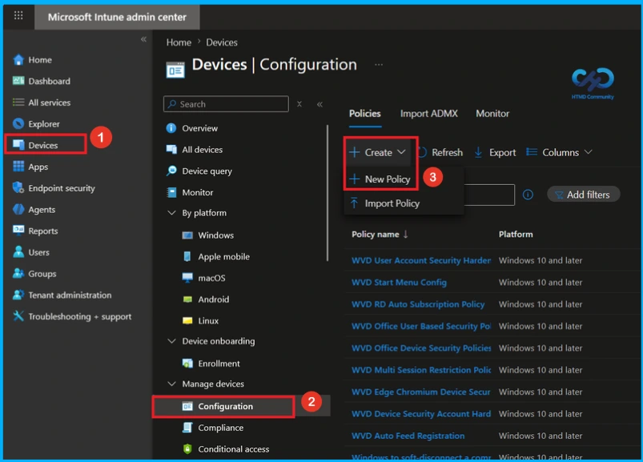
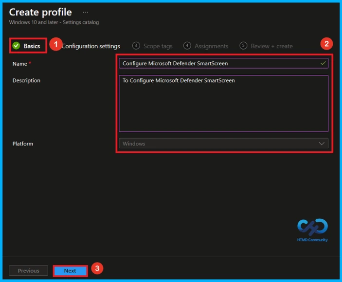
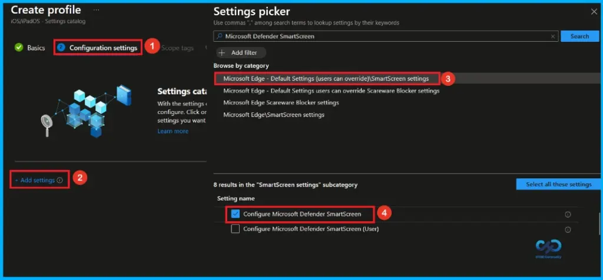
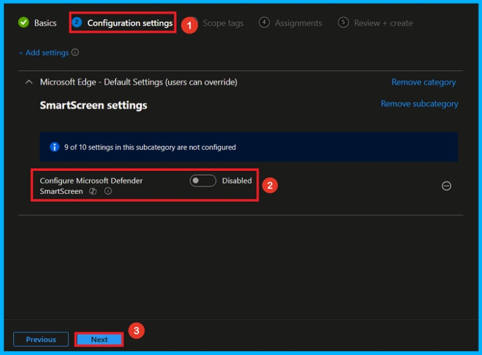
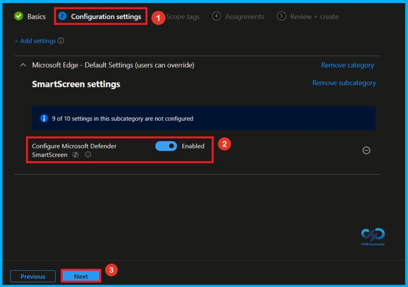
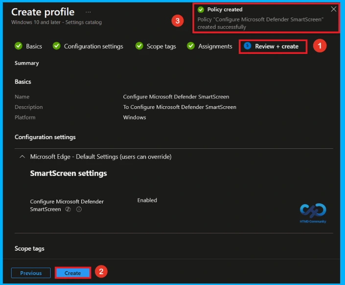
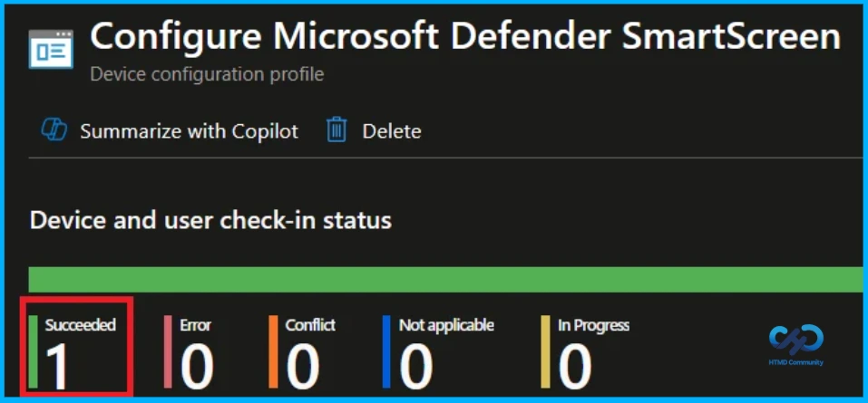
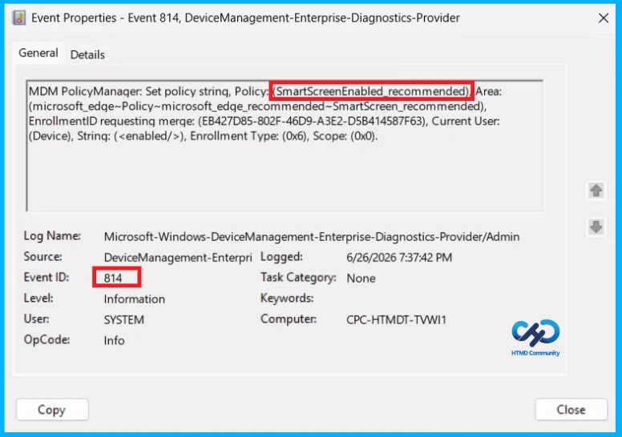
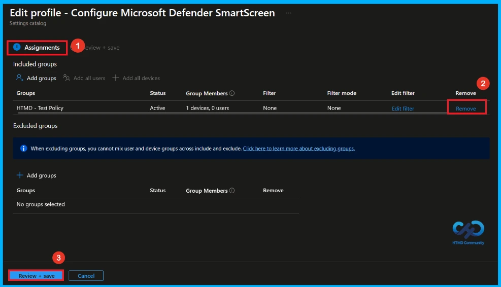
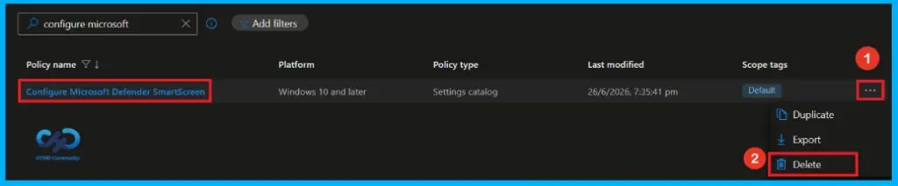

Key Takeaways
- Microsoft Defender SmartScreen helps protect against phishing and malicious software.
- The feature is enabled by default on supported Windows devices.
- Enabling or disabling the policy forces smart screen on or off.
- If the policy is not configured, users can choose whether to use smart screen.
Hey, let’s discuss about how to enable Microsoft Defender SmartScreen in Intune to block malicious websites phishing unsafe downloads and unrecognized apps. Microsoft Defender Smartscreen is a security feature that helps protect users from potential phishing scams and malicious software by displaying warning messages. By default, smart screen is turned on to provide continuous protection. If the policy is enabled, Microsoft Defender smart screen remains turned on. If the policy is disabled, smart screen is turned off.
Table of Contents
Enable Microsoft Defender SmartScreen in Intune to Block Malicious Websites Phishing Unsafe Downloads and Unrecognized Apps
If this policy is not configured, users can decide whether to use Microsoft Defender smart screen themselves. This policy is available only on Windows devices that are joined to a Microsoft Active Directory domain or on Windows 10 Pro or Enterprise devices that are enrolled for device management.
How to Create this Policy
To create a policy, the first step that you must do is to sign in to the Microsoft Intune Admin Centre. After clicking on the Device on the left side of the screen, select Configuration and then click Create and select New Policy.

Choosing Platform and Profile Type
On this page, you can select Platform and Profile before configuring the policy. It is a necessary step and you cannot skip it. Here I would like to configure the policy to Windows 10 and later platform and settings catalog profile. Then click on the Create button.

Name and Description
Basic tab helps you to give an identify for the settings you have to select for policy creation. You should add name(Configure Microsoft Defender Smartscreen) and description(To Configure Microsoft Defender Smartscreen) for policy. Here is Name is mandatory and description is optional. After adding this click on the Next button.

Configure Microsoft Defender Smart Screen Policy
From the Configuration Tab, you can see the +Add settings hyperlink to access specific settings. When you click on this hyperlink, you will get Settings Picker. Here, I select the category as Microsoft Edge – Default Settings\SmartScreen settings. Then, I choose Configure Microsoft Defender Smart Screen settings.

Disable Microsoft Defender Smart Screen Policy
After closing the settings picker, you can see the policy there. By default, Microsoft Defender SmartScreen policy will be disabled. You can disable or enable this policy setting. If you like continue by disabling this policy click next.

Enable Microsoft Defender Smart Screen Policy
If we enable or configure Microsoft Defender Smart screen policy, you can allow the Microsoft Defender Smart screen by toggling the switch from left to right. Then, you can click the Next button to proceed.

A scope tag in Intune is used to control visibility and access to Intune resources based on administrative roles. Scope tags are not mandatory. You can add the scope tag using the select scope tags button. Click Next to continue.

Assignment Tab of Microsoft Defender Smart Screen Policy
To assign the policy to specific groups, you can use the Assignment Tab. Here I click, +Add groups option under Included groups. I choose a group(HTMD _Test Policy) from the list of groups and click on the Select button. Again, I click on the Select button to continue.

Final Step of Policy Creation
At the review + create step, you can review each tab to avoid misconfiguration or policy failure. After reviewing the details and making any necessary changes by clicking Previous. We click Create to finish, and a notification confirms that the “Configure Microsoft Defender SmartScreen created successfully”.

Review and Deploy the Policy
The Monitoring Status page shows whether the policy has succeeded or not. To quickly configure the policy and take advantage of the policy sync the assigned device on Company Portal. Open the Intune Portal. Go to Devices > Configuration > Search for the Policy. Here, the policy shows as successful.

Client Side Verification
Event Viewer helps you check the client side and verify the policy status. Open the Client device and open the Event Viewer. Go to Start > Event Viewer. Navigate to Logs: In the left pane, go to Application and Services Logs > Microsoft > Windows > DeviceManagement-Enterprise-Diagnostics-Provider. Event ID 814.
MDM PolicyManager: Set policy strinq, Policy: SmartScreenEnabled recommended) Area:
(microsoft_edqe~Policy~microsoft_edqe_recommended~SmartScreen_recommended),
EnrollmentID requesting merge: (EB427D85-802F-46D9-A3E2-D5B414587F63), Current User:
(Device), String: (), Enrollment Type: (0x6), Scope: (0x0).

How to Remove Assigned Group from Configure Microsoft Defender Smart Screen Policy
If you want to remove the Assigned group from the policy, it is possible from the Intune Portal. To do this, open the Configure Microsoft Defender Smart Screen Policy on Intune Portal and edit the Assignments tab and the Remove Policy.
To get more detailed information, you can refer to our previous post – Learn How to Delete or Remove App Assignment from Intune using by Step-by-Step Guide.

How to Delete Microsoft Defender Smart Screen Policy from Intune
You can easily delete the Policy from the Intune Portal. From the Configuration section, select the policy(Configure Microsoft Defender Smart Screen) and click the 3 dots. Here, you can delete the policy and It will completely remove it from the client devices.
For detailed information, you can refer to our previous post – Learn How to Delete or Remove App Assignment from Intune using by Step-by-Step Guide.

Need Further Assistance or Have Technical Questions?
Join the LinkedIn Page and Telegram group to get the latest step-by-step guides and news updates. Join our Meetup Page to participate in User group meetings. Also, Join the WhatsApp Community and WhatsApp Channel to get the latest news on Microsoft Technologies. We are there on Reddit as well.
Author
Anoop C Nair has been Microsoft MVP from 2015 onwards for 10 consecutive years! He is a Workplace Solution Architect with more than 22+ years of experience in Workplace technologies. He is also a Blogger, Speaker, and Local User Group Community leader. His primary focus is on Device Management technologies like SCCM and Intune. He writes about technologies like Intune, SCCM, Windows, Cloud PC, Windows, Entra, Microsoft Security, Career, etc.